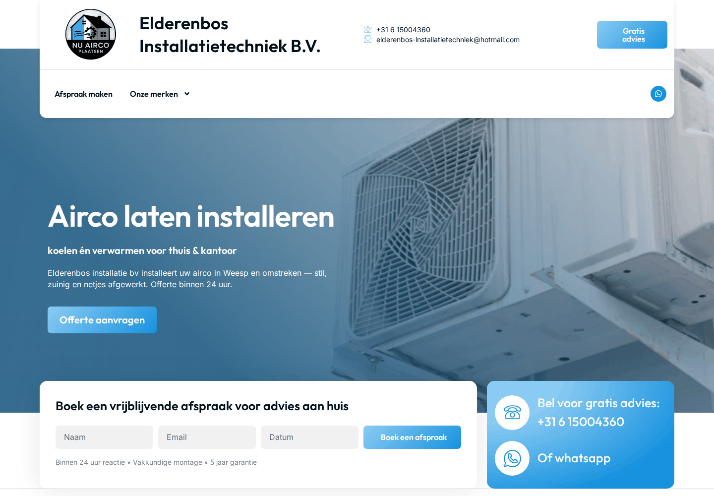
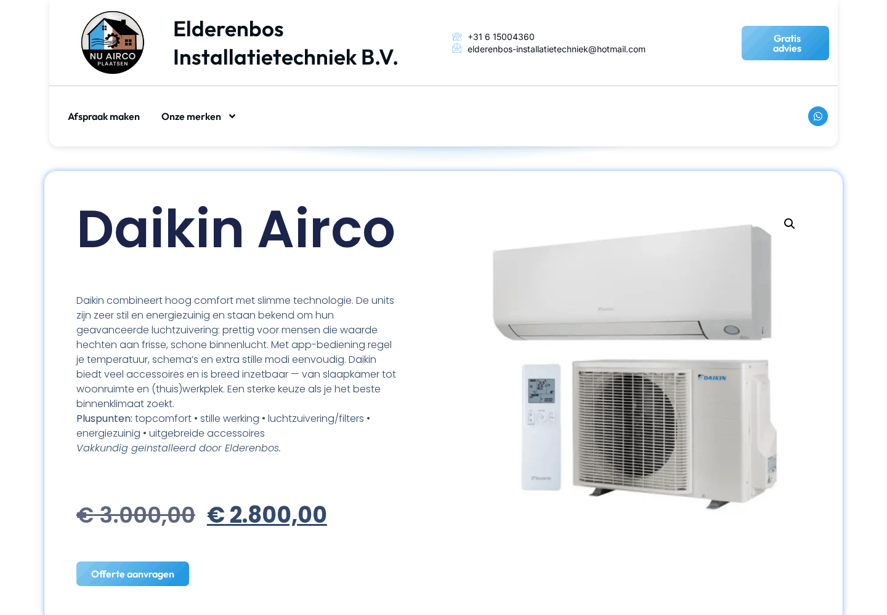
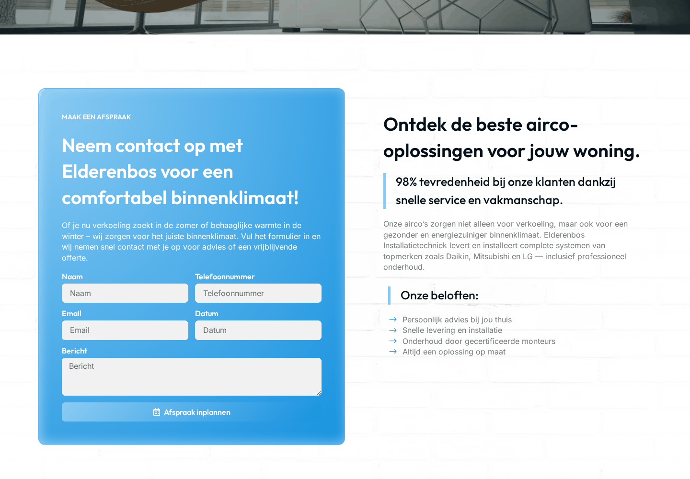
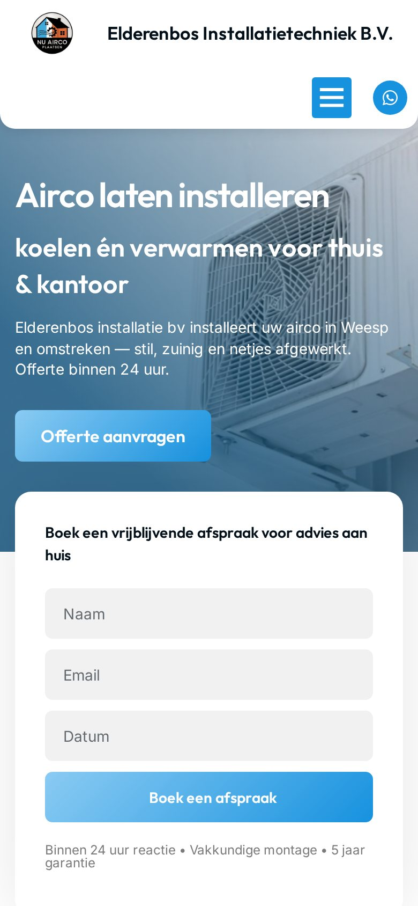
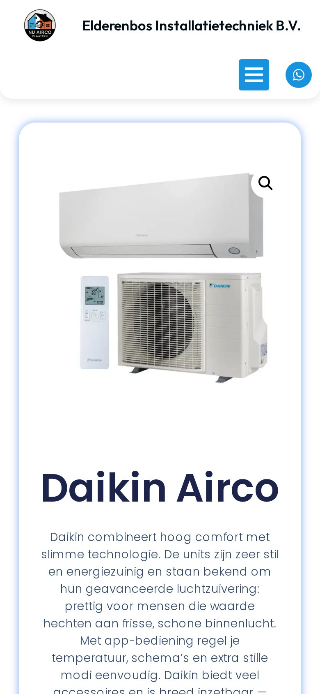

Case
Website voor een airco-installateur — Elderenbos Installatietechniek
Voor Jamie van Elderenbos Installatietechniek bouwde ik nuaircolatenplaatsen.nl: een website die mensen bereikt die een airco willen laten plaatsen, en hen naar een offerteaanvraag of afspraak leidt.



Vraag
Klanten aantrekken voor airco-installaties
Jamie installeert airco's en wilde een website waarmee hij daarvoor klanten aantrekt. Mensen die een airco willen laten plaatsen, moesten zijn bedrijf in Google vinden en daarna makkelijk contact opnemen.
Daarom begon ik met zoekwoordenonderzoek: waarop zoeken mensen die een airco willen laten plaatsen? Die zoekwoorden bepaalden de inhoud van de site. De hoofdpagina legt uit wat Jamie doet en leidt bezoekers naar contact. Elke airco kreeg een eigen productpagina, en een contactpagina bundelt de manieren om een offerte of afspraak aan te vragen.
Resultaat
Aanvragen uit de eigen regio
De site levert inmiddels aanvragen op. In een SEO-check van 4 november 2026 stond Elderenbos in Google Maps op positie 2 tot 4 voor zoekopdrachten in Weesp.
- Inhoud gebaseerd op zoekwoordenonderzoek naar airco laten plaatsen.
- Diensten, werkgebied en merken overzichtelijk op de hoofdpagina.
- Een productpagina per airco, gebouwd met WooCommerce.
- Offerteaanvraag, afspraakformulier, bellen en WhatsApp vanaf de site.
-

Op mobiel: homepage met afspraakformulier -

Op mobiel: productpagina van een airco
Ik ben na oplevering het aanspreekpunt gebleven. Op dit moment breid ik de site uit met warmtepompen.
Herkenbaar?
Loopt de website van je installatiebedrijf achter?
Ik kijk met je mee wat je huidige site nu oplevert en wat er nodig is om meer aanvragen uit je eigen regio te krijgen.